{
"resolution": "562x743",
"channels": 3,
"dtype": "uint8",
"expected_items": [
"Chapati",
"Steamed Rice",
"Dal",
"Curry",
"Mix Veg"
],
"plate_profile": null,
"debug": true
}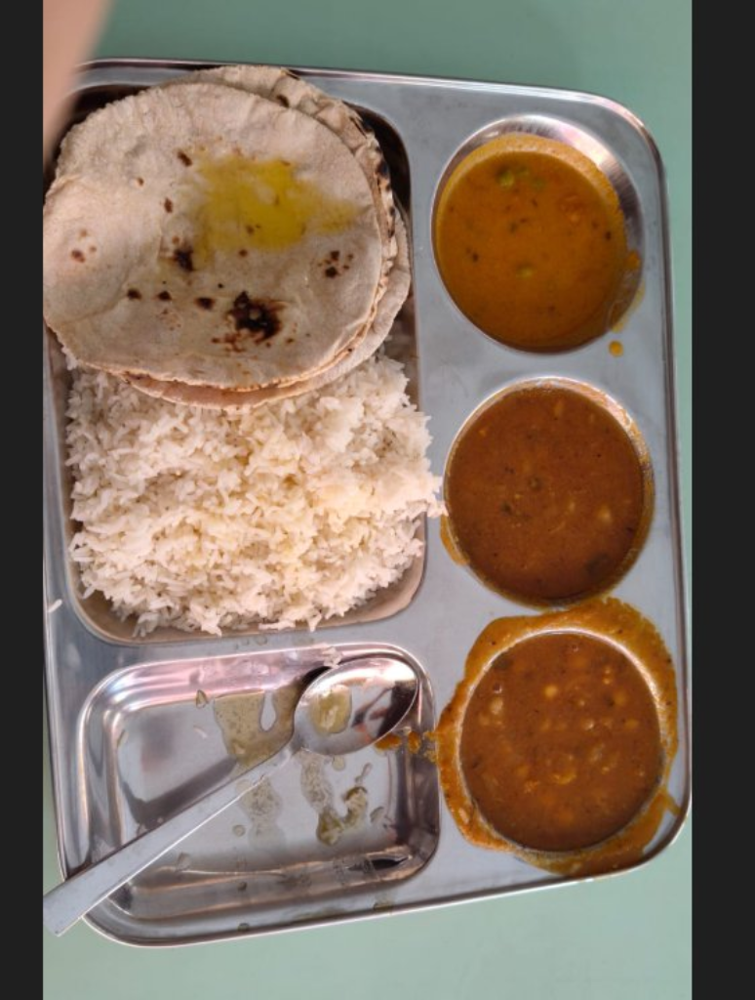
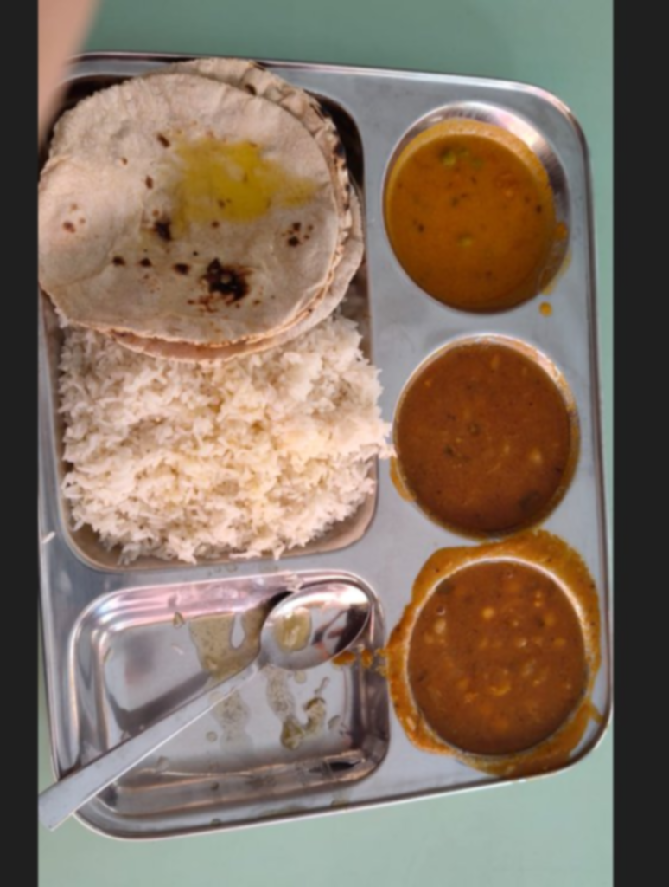
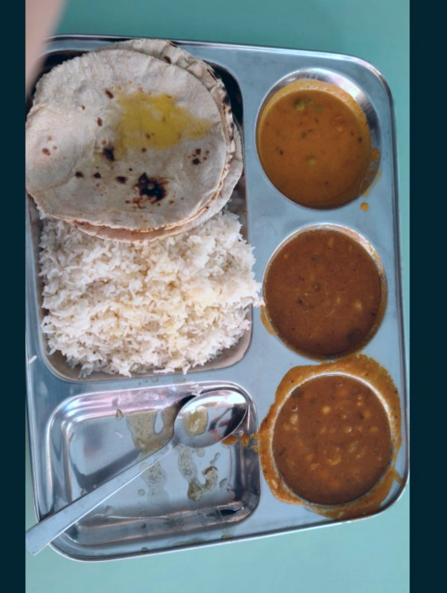
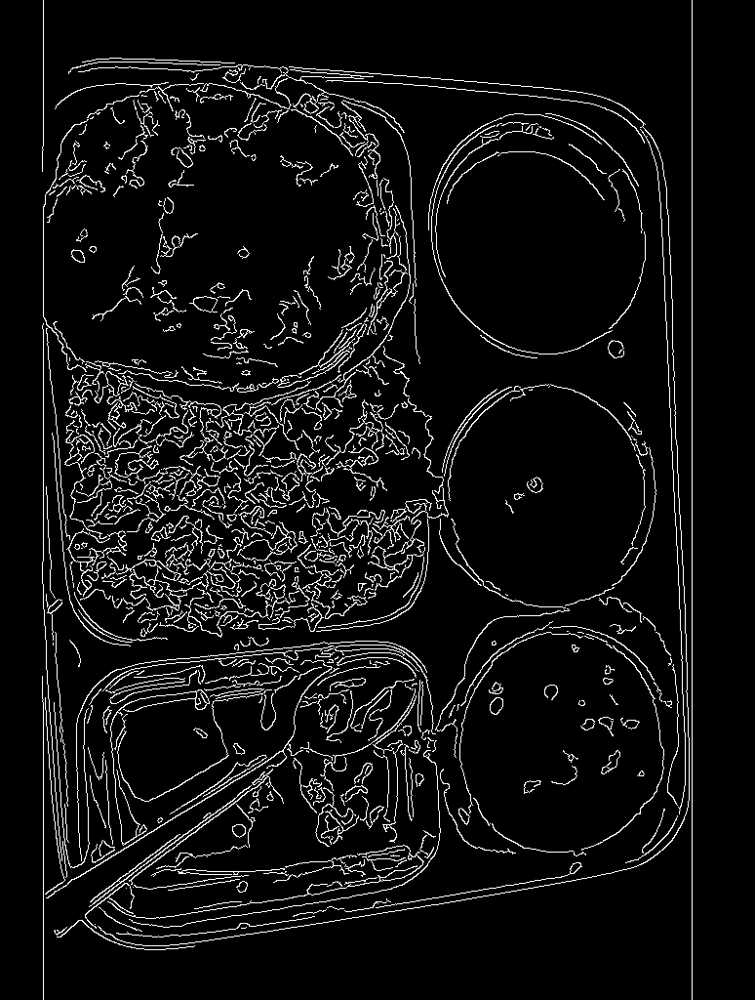
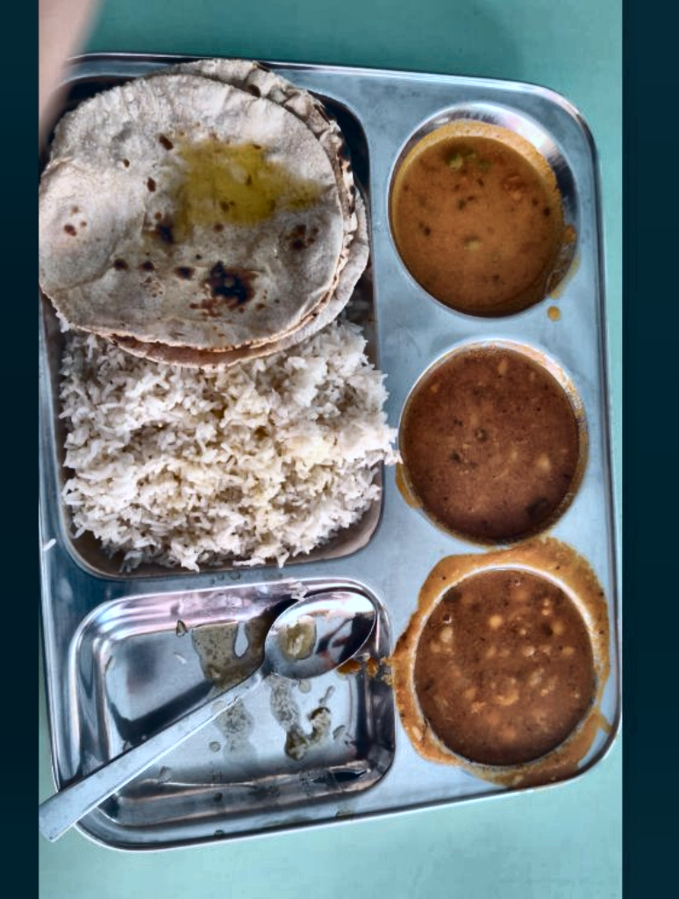
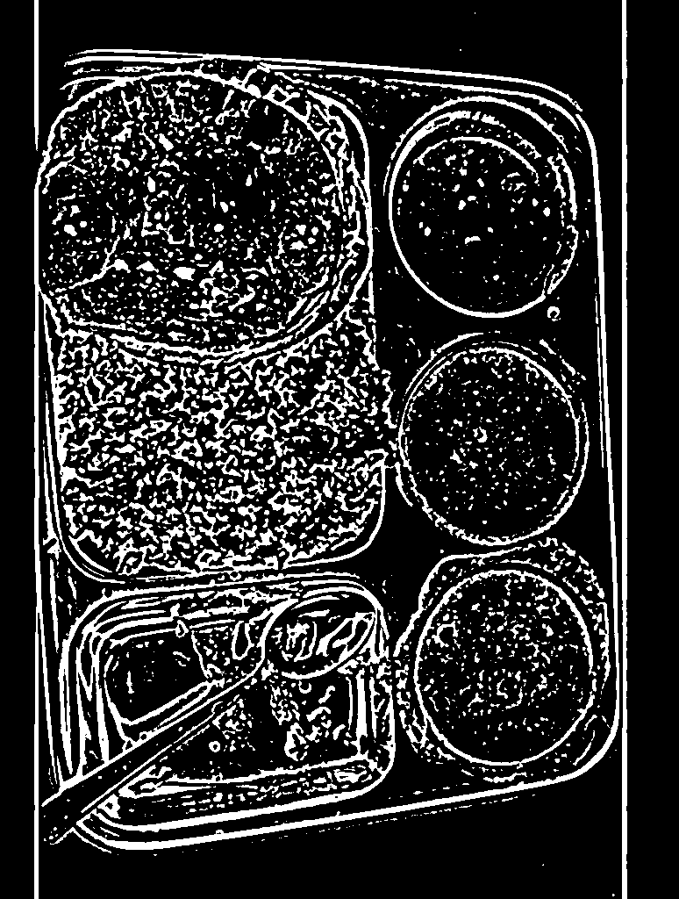
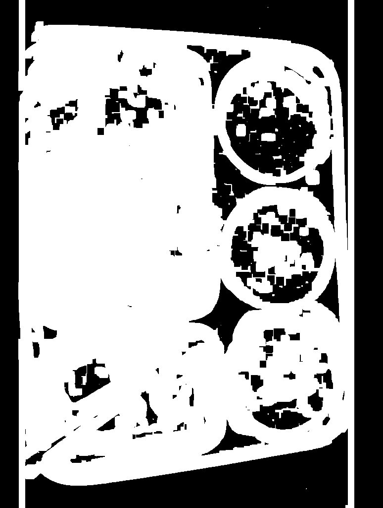

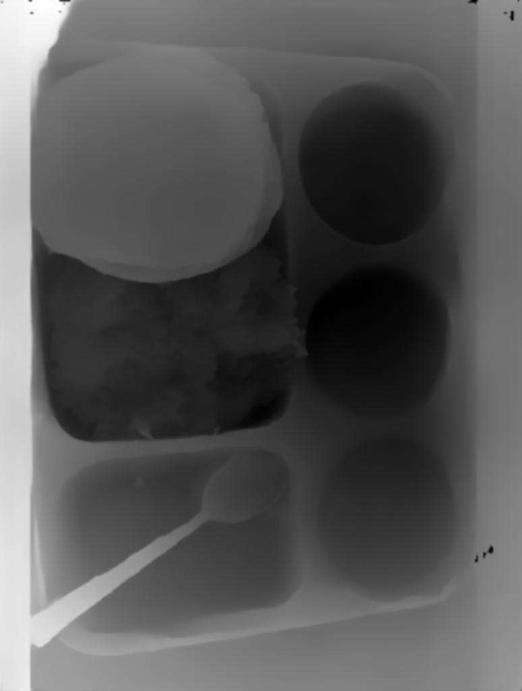
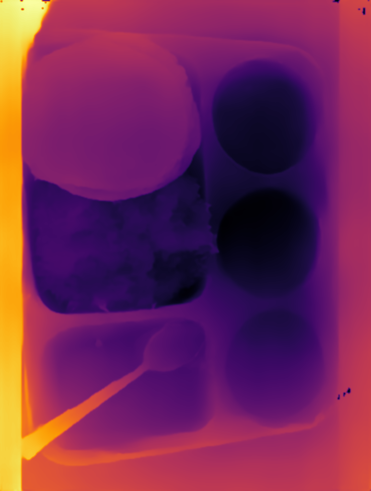
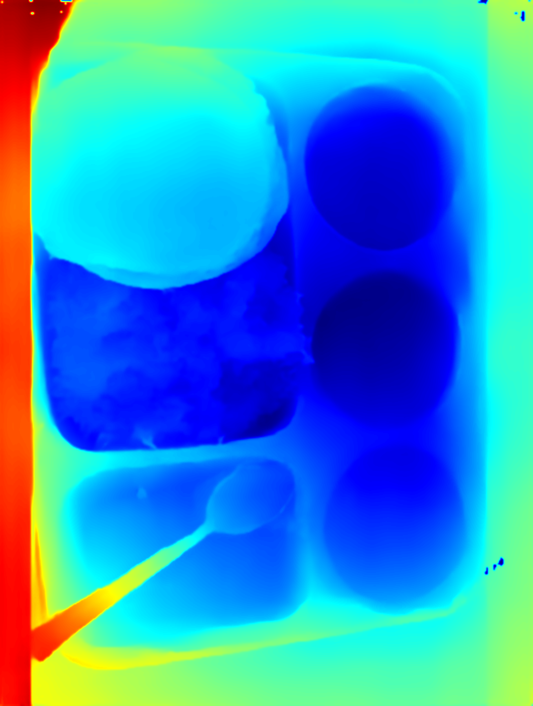
[]
{
"item_id": "Steamed Rice_1",
"area_pixels": 81969,
"estimated_height_cm": 1.688,
"volume_estimate_ml": 135.8,
"density": 1.085,
"mass_g": 147.4,
"class_label": "Steamed Rice",
"class_confidence": 0.8972,
"depth_stability": 1.0,
"scale_confidence": 0.7,
"composite_confidence": 0.8664,
"prior_applied": true
}{
"item_id": "Chapati_2",
"area_pixels": 89935,
"estimated_height_cm": 1.221,
"volume_estimate_ml": 90.9,
"density": 0.831,
"mass_g": 75.5,
"class_label": "Chapati",
"class_confidence": 0.7019,
"depth_stability": 1.0,
"scale_confidence": 0.7,
"composite_confidence": 0.7663,
"prior_applied": true
}{
"item_id": "Dal_3",
"area_pixels": 34816,
"estimated_height_cm": 1.538,
"volume_estimate_ml": 51.7,
"density": 1.092,
"mass_g": 56.5,
"class_label": "Dal",
"class_confidence": 0.6972,
"depth_stability": 1.0,
"scale_confidence": 0.7,
"composite_confidence": 0.7638,
"prior_applied": true
}{
"item_id": "Dal_4",
"area_pixels": 36426,
"estimated_height_cm": 1.538,
"volume_estimate_ml": 54.1,
"density": 1.077,
"mass_g": 58.3,
"class_label": "Dal",
"class_confidence": 0.6566,
"depth_stability": 1.0,
"scale_confidence": 0.7,
"composite_confidence": 0.7412,
"prior_applied": true
}{
"item_id": "Chapati_5",
"area_pixels": 7028,
"estimated_height_cm": 0.546,
"volume_estimate_ml": 4.0,
"density": 0.826,
"mass_g": 3.3,
"class_label": "Chapati",
"class_confidence": 0.6294,
"depth_stability": 1.0,
"scale_confidence": 0.7,
"composite_confidence": 0.7257,
"prior_applied": true
}{
"item_id": "Dal_6",
"area_pixels": 36421,
"estimated_height_cm": 1.538,
"volume_estimate_ml": 54.1,
"density": 1.077,
"mass_g": 58.3,
"class_label": "Dal",
"class_confidence": 0.5949,
"depth_stability": 1.0,
"scale_confidence": 0.7,
"composite_confidence": 0.7055,
"prior_applied": true
}{
"item_id": "Chapati_7",
"area_pixels": 7848,
"estimated_height_cm": 1.34,
"volume_estimate_ml": 7.9,
"density": 0.823,
"mass_g": 6.5,
"class_label": "Chapati",
"class_confidence": 0.4579,
"depth_stability": 1.0,
"scale_confidence": 0.7,
"composite_confidence": 0.619,
"prior_applied": true
}{
"item_id": "Dal_8",
"area_pixels": 186678,
"estimated_height_cm": 1.983,
"volume_estimate_ml": 302.7,
"density": 1.068,
"mass_g": 323.2,
"class_label": "Dal",
"class_confidence": 0.3732,
"depth_stability": 1.0,
"scale_confidence": 0.7,
"composite_confidence": 0.5588,
"prior_applied": true
}{
"item_id": "unlisted food_9",
"area_pixels": 15317,
"estimated_height_cm": 1.925,
"volume_estimate_ml": 27.9,
"density": 1.0,
"mass_g": 27.9,
"class_label": "unlisted food",
"class_confidence": 0.4033,
"depth_stability": 0.75,
"scale_confidence": 0.7,
"composite_confidence": 0.5406,
"prior_applied": false
}{
"item_id": "unlisted food_10",
"area_pixels": 120616,
"estimated_height_cm": 1.511,
"volume_estimate_ml": 172.6,
"density": 1.0,
"mass_g": 172.6,
"class_label": "unlisted food",
"class_confidence": 0.3935,
"depth_stability": 0.75,
"scale_confidence": 0.7,
"composite_confidence": 0.534,
"prior_applied": false
}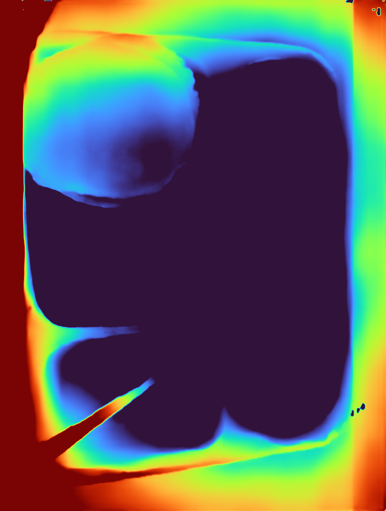
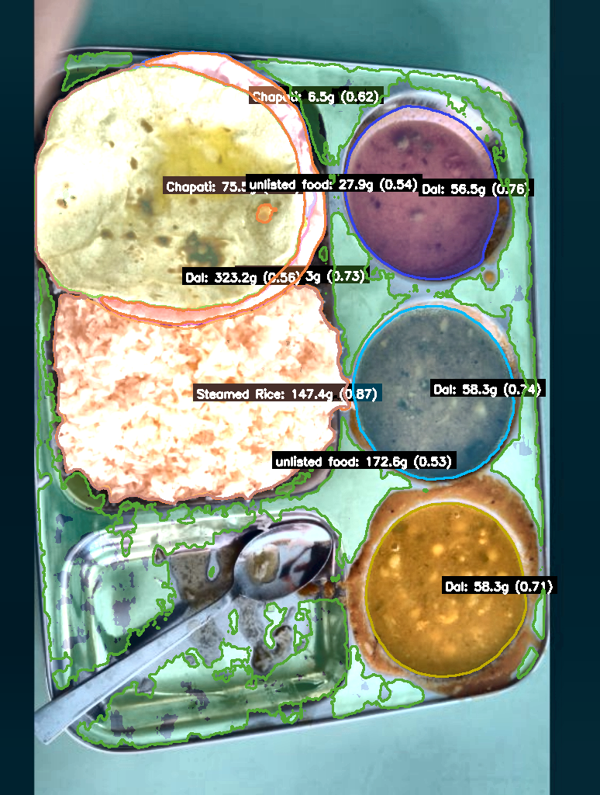
{
"food_items": [
{
"name": "Steamed Rice",
"volume_ml": 135.8,
"mass_g": 147.4,
"calories": 151.8,
"protein": 2.9,
"carbs": 33.2,
"fat": 0.0,
"confidence": 0.8664,
"class_label": "Steamed Rice",
"class_confidence": 0.8972,
"top_k": [
{
"label": "Steamed Rice",
"confidence": 0.8972,
"raw_similarity": 0.8972
}
],
"identification_status": "recognized",
"menu_match": true,
"matched_menu_item": "Steamed Rice",
"identification_confidence": 0.8972,
"segmentation_confidence": 0.8972,
"association_confidence": 1.0,
"menu_match_confidence": 1.0,
"depth_confidence": 1.0,
"scale_confidence": 0.7,
"instance_count": 1
},
{
"name": "Chapati",
"volume_ml": 102.8,
"mass_g": 85.3,
"calories": 222.0,
"protein": 6.4,
"carbs": 42.8,
"fat": 2.2,
"confidence": 0.7663,
"class_label": "Chapati",
"class_confidence": 0.7019,
"top_k": [
{
"label": "Chapati",
"confidence": 0.7019,
"raw_similarity": 0.7019
}
],
"identification_status": "recognized",
"menu_match": true,
"matched_menu_item": "Chapati",
"identification_confidence": 0.7019,
"segmentation_confidence": 0.7019,
"association_confidence": 1.0,
"menu_match_confidence": 1.0,
"depth_confidence": 1.0,
"scale_confidence": 0.7,
"instance_count": 3
},
{
"name": "Dal",
"volume_ml": 462.6,
"mass_g": 496.3,
"calories": 661.8,
"protein": 36.4,
"carbs": 99.3,
"fat": 13.3,
"confidence": 0.7638,
"class_label": "Dal",
"class_confidence": 0.6972,
"top_k": [
{
"label": "Dal",
"confidence": 0.6972,
"raw_similarity": 0.6972
}
],
"identification_status": "recogniz[
{
"step": "Input",
"message": "Original image saved",
"params": {
"resolution": "562x743"
},
"elapsed_s": 0.0425,
"input_file": null,
"output_file": "original.png",
"timestamp": "2026-11-11T23:00:05.241076"
},
{
"step": "Pipeline",
"message": "Step 1 — Preprocessing & Perspective Warp",
"params": {},
"elapsed_s": null,
"input_file": null,
"output_file": null,
"timestamp": "2026-11-11T23:00:05.242078"
},
{
"step": "Quality Gate",
"message": "PASS",
"params": {
"blur_score": 387.53,
"tilt_deg": 34.5
},
"elapsed_s": null,
"input_file": null,
"output_file": null,
"timestamp": "2026-11-11T23:00:05.308444"
},
{
"step": "Preprocessing",
"message": "Resize applied",
"params": {
"original": "562x743",
"target_long_edge": 1024,
"scale": 1.3782
},
"elapsed_s": 0.0029,
"input_file": null,
"output_file": "01_resized.png",
"timestamp": "2026-11-11T23:00:05.382846"
},
{
"step": "Preprocessing",
"message": "Gaussian blur applied",
"params": {
"kernel": 5
},
"elapsed_s": 0.0046,
"input_file": null,
"output_file": "02_denoised.png",
"timestamp": "2026-11-11T23:00:05.454143"
},
{
"step": "Preprocessing",
"message": "LAB color normalization applied",
"params": {},
"elapsed_s": 0.363,
"input_file": null,
"output_file": "03_color_normalized.png",
"timestamp": "2026-11-11T23:00:05.884923"
},
{
"step": "Preprocessing",
"message": "CLAHE contrast enhancement applied",
"params": {
"clip_limit": 2.0,
"tile_grid": "8x8"
},
"elapsed_s": 0.0194,
"input_file": null,
"output_file": "04_contrast_enhanced.png",
"timestamp": "2026-11-11T23:00:05.977383"
},
{
"step": "Preprocessing",
"message": "Canny edge detection",
"params": {
"low": 50,
"high": 150
},
"elapsed_s": 0.025| Step | Message | Params | Time |
|---|---|---|---|
| Input | Original image saved | {"resolution": "562x743"} | 0.0425s |
| Pipeline | Step 1 — Preprocessing & Perspective Warp | — | — |
| Quality Gate | PASS | {"blur_score": 387.53, "tilt_deg": 34.5} | — |
| Preprocessing | Resize applied | {"original": "562x743", "target_long_edge": 1024, "scale": 1.3782} | 0.0029s |
| Preprocessing | Gaussian blur applied | {"kernel": 5} | 0.0046s |
| Preprocessing | LAB color normalization applied | — | 0.3630s |
| Preprocessing | CLAHE contrast enhancement applied | {"clip_limit": 2.0, "tile_grid": "8x8"} | 0.0194s |
| Preprocessing | Canny edge detection | {"low": 50, "high": 150} | 0.0259s |
| Preprocessing | Warp skipped (no 4-pt contour) | {"warped": false} | — |
| Preprocessing | Complete | {"output_size": "774x1024"} | 0.8531s |
| Pipeline | Step 2 — Compartments & Scale | — | — |
| Compartment Detection | Detected 0 compartments | {"min_area_frac": 0.02, "max_area_frac": 0.9, "compartment_count": 0} | 0.0292s |
| Scale Calibration | Fallback to bbox-based calibration | {"cm_per_pixel": 0.03399, "method": "bbox"} | — |
| Compartment Detection | Scale computed | {"cm_per_pixel": 0.03399, "pixel_area_cm2": 0.00115516, "compartments": 0, "scale_confidence": 0.7} | 0.1344s |
| Pipeline | Step 3 — Depth Estimation | — | — |
| Depth Estimation | Depth Anything depth map computed (smoothed) | {"device": "cuda", "is_metric": true, "shape": [1024, 774], "min": -77.625, "max": -40.442} | 27.2650s |
| Depth Normalization | Surface normal plane subtracted from depth | {"baseline": -66.068, "fitted_plane": true, "is_metric": true} | 0.1383s |
| Depth Metric [cm] | Metric depth height in cm directly computed | {"cm_per_pixel": 0.03399, "min_cm": 0.0, "max_cm": 15.0, "mean_cm": 3.24} | 0.0038s |
| Depth Estimation | Complete | — | 27.5624s |
| Pipeline | Step 4–6 — SAM 3 Food Identification & Segmentation | — | — |
| SAM3 | Identified 10 food items (8 recognized, 0 unlisted, 2 uncertain) | — | 70.6929s |
| Pipeline | Step 7 — Volume & Mass Estimation | — | — |
| Volume Estimation | Computed mass for 10 items | {"total_items": 10} | 0.0744s |
| Pipeline | ✅ Pipeline complete | {"total_food_items": 10, "avg_confidence": 0.6821, "scale_method": "bbox"} | 99.5380s |